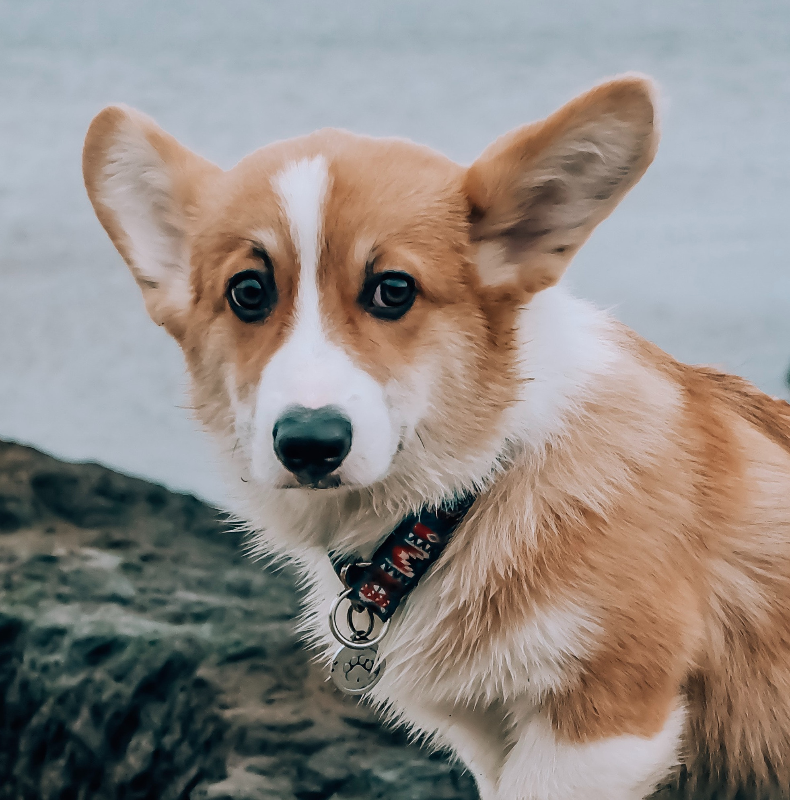
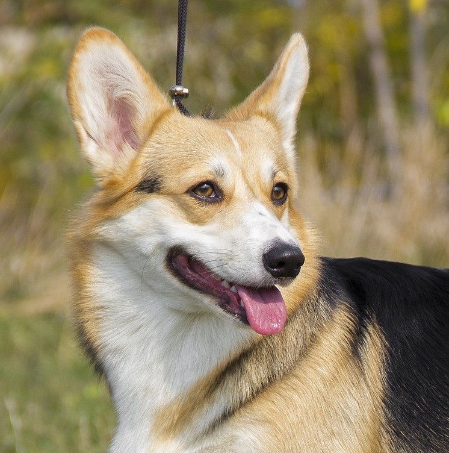
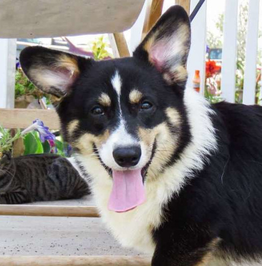
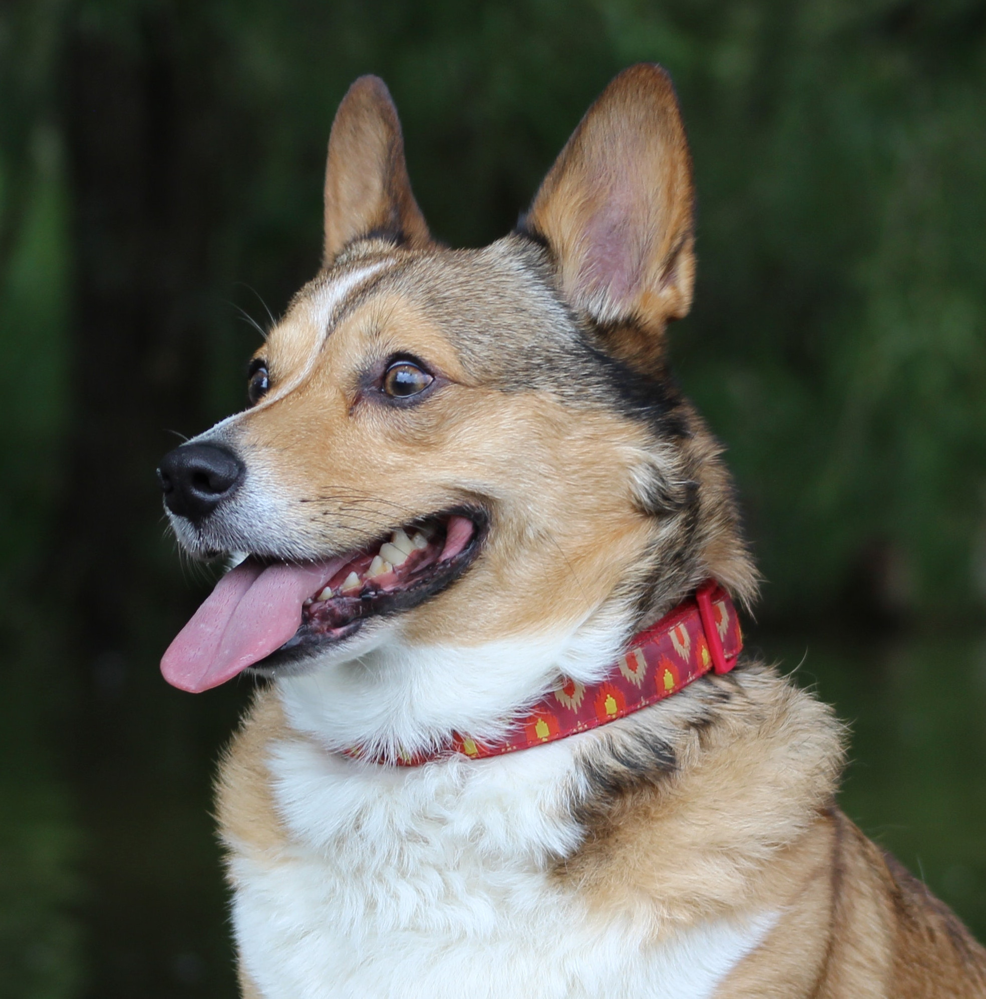

Among the most agreeable of all small housedogs, the Pembroke Welsh Corgi is a strong, athletic, and lively little herder who is affectionate and companionable without being needy. They are one the world's most popular herding breeds. At 10 to 12 inches at the shoulder and 27 to 30 pounds, a well-built male Pembroke presents a big dog in a small package.
Colorations




According to the Pembroke Welsh Corgi Club of America, it is believed that the Pembroke’s ancestry dates back to at least the 10th century. It is unknown, however, whether they are descended from the Swedish Vallhunds that were possibly brought to Pembrokeshire by the Vikings, or from the ancestors of the present-day Schipperkes and Pomeranians brought to Wales by Flemish weavers.
Learn more:
Sign up for our newsletter bu clicking that button over there!